CS180 Project 5: Diffusion Models & Flow Matching
Part A: Text-to-Image Generation with DeepFloyd IF | Part B: Flow Matching from Scratch
Table of Contents
- Part A: The Power of Diffusion Models
- Part 0: Setup and Initial Image Generation
- Part 1: Sampling Loops
- 1.1 Implementing the Forward Process
- 1.2 Classical Denoising
- 1.3 One-Step Denoising
- 1.4 Iterative Denoising
- 1.5 Diffusion Model Sampling
- 1.6 Classifier-Free Guidance (CFG)
- 1.7 Image-to-image Translation
- 1.7.1 Editing Hand-Drawn and Web Images
- 1.7.2 Inpainting
- 1.7.3 Text-Conditional Image-to-image Translation
- 1.8 Visual Anagrams
- 1.9 Hybrid Images
- Part B: Flow Matching from Scratch
Part 0: Setup and Initial Image Generation
Overview
In this project, I explored the DeepFloyd IF diffusion model, a two-stage text-to-image model trained by Stability AI. The first stage produces images of size 64x64, and the second stage upscales to 256x256. I used the Hugging Face prompt encoder to convert text prompts into high-dimensional embeddings that the model can understand.
Random Seed
For reproducibility, I used random seed 100 throughout all experiments in this project.
Generated Images
Below are three images generated using my custom text prompts. I experimented with different
num_inference_steps values (20, 50, and 100) to observe how the number of denoising steps affects image quality.
Image 1: "a capybara sitting by a river"
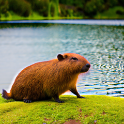
num_inference_steps = 20
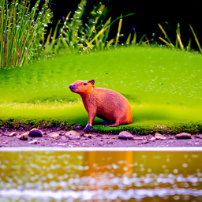
num_inference_steps = 50
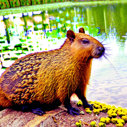
num_inference_steps = 100
Image 2: "a burning campfire with sparks"
num_inference_steps = 20
num_inference_steps = 50
num_inference_steps = 100
Image 3: "a penguin wearing a wizard hat casting a spell"
num_inference_steps = 20
num_inference_steps = 50
num_inference_steps = 100
Observations
The DeepFloyd model produces reasonable results that generally match the text prompts. The capybara image captures the essence of the animal by water, though the details are somewhat blurry at 64x64 resolution. The campfire image successfully shows flames with sparks. The penguin wizard is particularly creative, showing magical effects around the penguin.
Using more inference steps generally produces cleaner, more detailed images but takes longer to generate.
With fewer steps, the images tend to be noisier and less coherent. Comparing across the different
num_inference_steps values, we can see that 100 steps produces the cleanest results,
while 20 steps shows more artifacts and less refined details.
Part 1: Sampling Loops
1.1 Implementing the Forward Process
The forward process adds noise to a clean image according to the formula:
This takes a clean image $x_0$ and produces a noisy version $x_t$ at timestep $t$. The noise level is controlled by $\bar\alpha_t$ from the noise schedule, where larger $t$ means more noise.
Noisy Campanile at Different Timesteps
Below shows the Campanile test image with noise added at timesteps 250, 500, and 750:
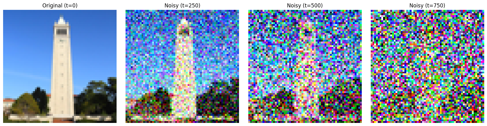
Campanile at t=250, t=500, and t=750 (progressively more noisy)
As expected, the image becomes progressively noisier as $t$ increases. At $t=250$, the structure is still clearly visible. At $t=500$, details are obscured but the general shape remains. At $t=750$, the image is nearly pure noise with only hints of the original structure.
1.2 Classical Denoising
Before using the diffusion model, I attempted to denoise the noisy images using classical methods - specifically Gaussian blur filtering. This approach attempts to smooth out the noise but cannot recover the original image details.
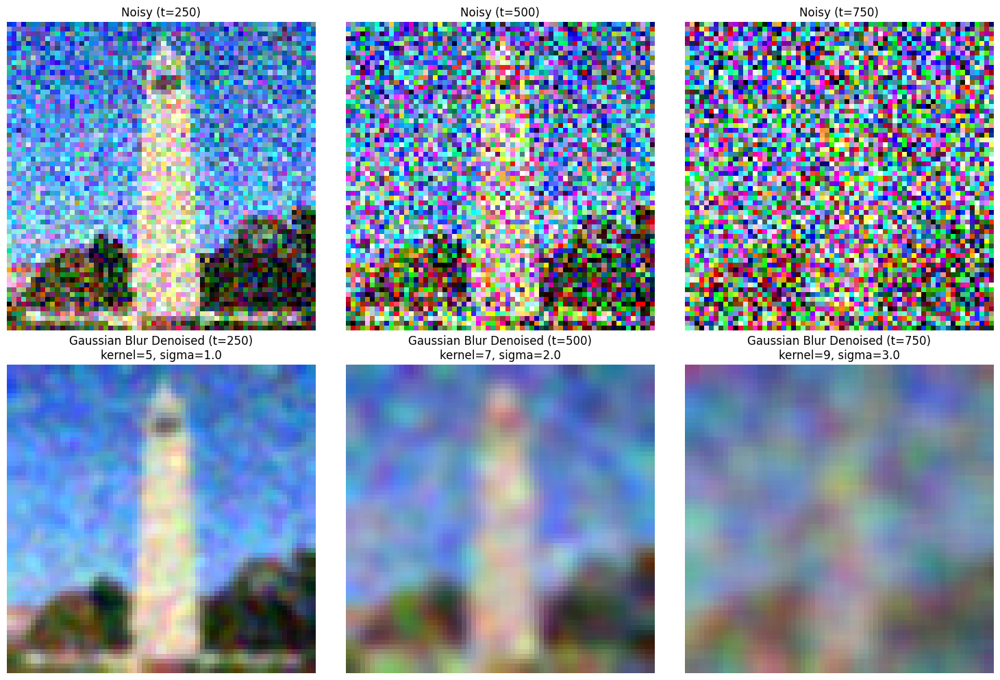
Gaussian blur denoising at different noise levels
The results show that Gaussian blur is ineffective at denoising these images. The blur removes some noise but also destroys image structure, resulting in blurry, indistinct outputs. This demonstrates why learned denoisers like diffusion models are necessary for high-quality image restoration.
1.3 One-Step Denoising
Using the pretrained DeepFloyd UNet denoiser, I performed one-step denoising on the noisy images. The UNet predicts the noise $\epsilon$ in the image, which can then be removed to estimate the clean image $x_0$.
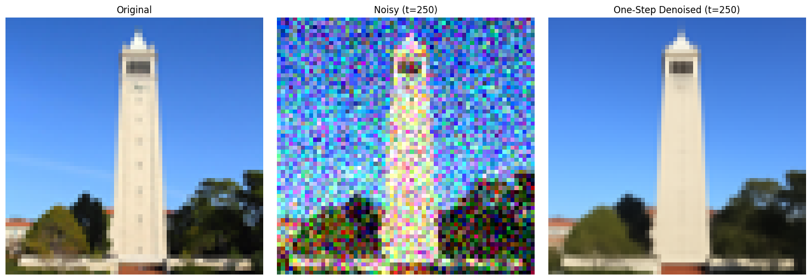
One-step denoised at t=250
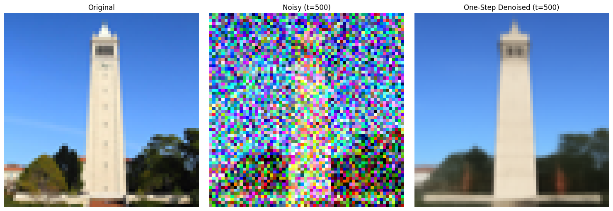
One-step denoised at t=500
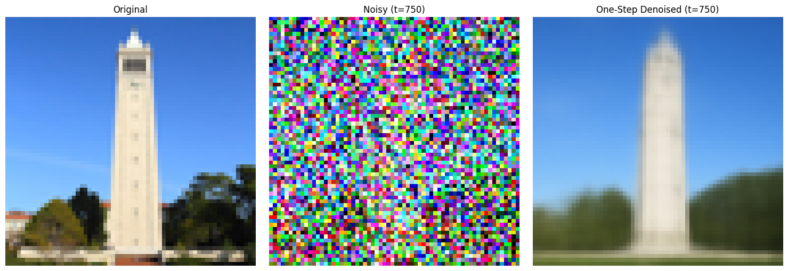
One-step denoised at t=750
The diffusion model UNet does a much better job than Gaussian blur. At lower noise levels (t=250), the reconstruction is quite good. However, as the noise level increases, the one-step denoising quality degrades significantly because the problem becomes much harder - there's simply too much noise to remove in a single step.
1.4 Iterative Denoising
Diffusion models are designed to denoise iteratively. Instead of removing all noise at once, we gradually remove noise over multiple steps using a strided timestep schedule. I used timesteps starting at 990, with stride 30, down to 0.
Denoising at Different Timesteps
Below shows the iterative denoising process at every 5th step, demonstrating how the image gradually becomes cleaner as noise is removed:
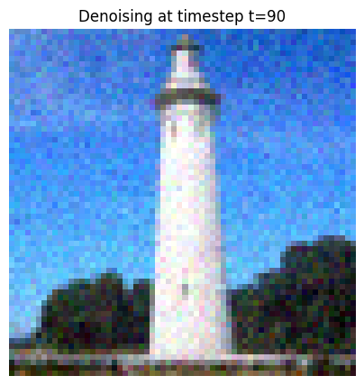
t=90
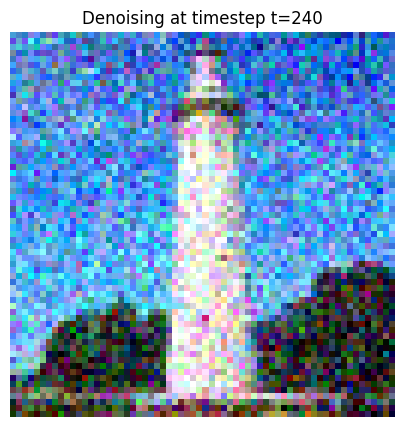
t=240
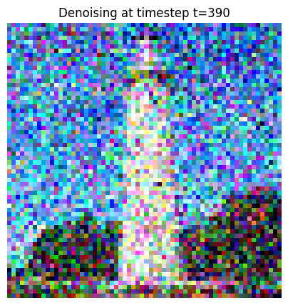
t=390
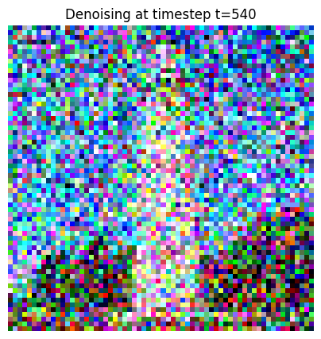
t=540
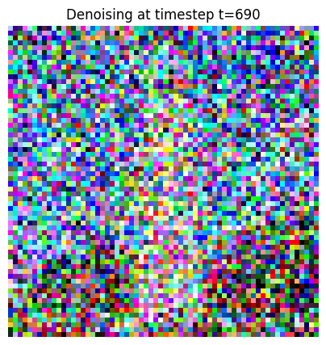
t=690
Comparison of Methods
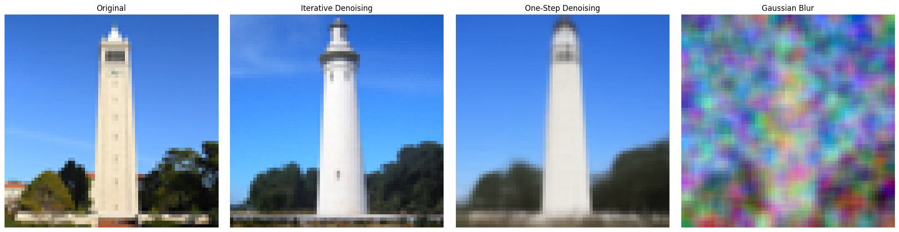
Comparison: Original, Iterative Denoising, One-Step Denoising, Gaussian Blur
The iterative denoising approach produces significantly better results than one-step denoising. By gradually removing noise over multiple steps, the model can better preserve image structure and produce cleaner outputs. The comparison shows that iterative denoising closely matches the original image, while one-step denoising and Gaussian blur fail to recover fine details.
1.5 Diffusion Model Sampling
Using the iterative_denoise function, we can generate images from scratch by starting
with pure random noise and denoising it completely. This effectively samples from the learned
image distribution.
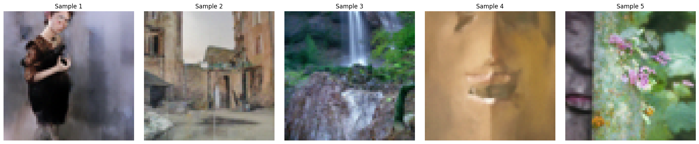
5 sampled images using "a high quality photo" prompt
The sampled images show recognizable structures but quality is limited. Without classifier-free guidance (CFG), the model produces somewhat incoherent images. This will be improved in the next section.
1.6 Classifier-Free Guidance (CFG)
Classifier-Free Guidance dramatically improves image quality by computing both conditional and unconditional noise estimates and combining them:
where $\gamma > 1$ amplifies the conditional signal. I used $\gamma = 7$ for these experiments.
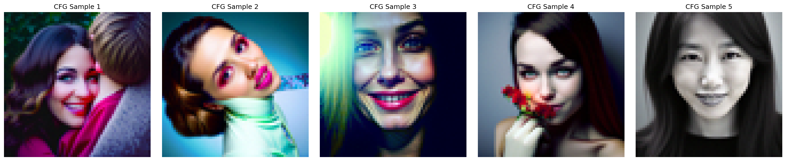
5 sampled images with CFG ($\gamma = 7$)
The CFG samples are significantly better than the non-CFG samples from section 1.5. The images are more coherent, have better composition, and more closely match what one would expect from "a high quality photo" prompt.
1.7 Image-to-image Translation (SDEdit)
Following the SDEdit algorithm, I edit existing images by adding noise and then denoising with the diffusion model. The amount of noise controls how much the image is edited - more noise means larger edits.
Campanile Edits
i_start=1
i_start=3
i_start=5
i_start=7
i_start=10
i_start=20
Original
Test Image 1 Edits
i_start=1
i_start=3
i_start=5
i_start=7
i_start=10
i_start=20
Original
Test Image 2 Edits
i_start=1
i_start=3
i_start=5
i_start=7
i_start=10
i_start=20
Original
As i_start decreases (more denoising steps), the images become more creative and diverge from the original. With higher i_start values, the output closely resembles the original image since less denoising is performed.
1.7.1 Editing Hand-Drawn and Web Images
SDEdit works particularly well on non-realistic images like sketches and drawings, projecting them onto the natural image manifold to create realistic versions.
Hand-Drawn Image 1
i_start=1
i_start=3
i_start=5
i_start=7
i_start=10
i_start=20
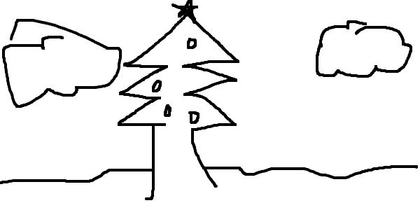
Original
Hand-Drawn Image 2
i_start=1
i_start=3
i_start=5
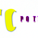
i_start=7
i_start=10
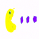
i_start=20
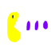
Original
Web Image
i_start=1
i_start=3
i_start=5
i_start=7
i_start=10
i_start=20
Original
1.7.2 Inpainting
Inpainting fills in masked regions of an image while preserving unmasked areas. At each denoising step, I replaced pixels outside the mask with the appropriately noised version of the original image:
Campanile Inpainting
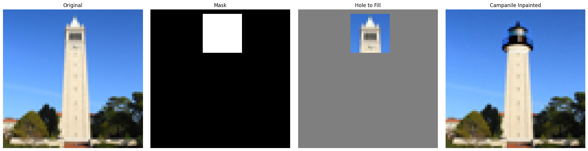
Campanile with top inpainted (original, mask, hole to fill, result)
Custom Image 1 Inpainting
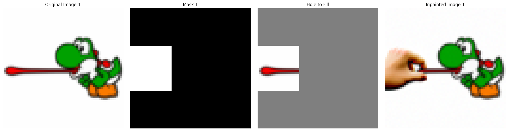
Custom image 1 inpainting
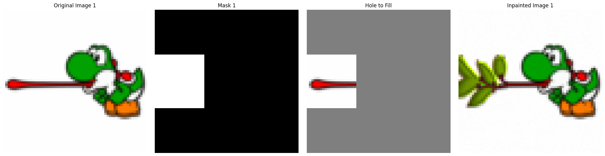
Custom image 1 (alternative result)
Custom Image 2 Inpainting
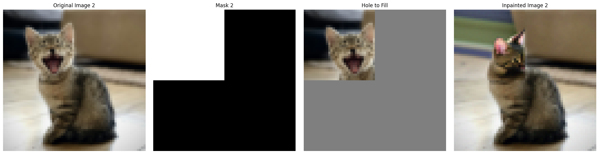
Custom image 2 inpainting
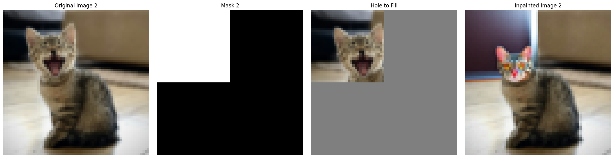
Custom image 2 (alternative result)
1.7.3 Text-Conditional Image-to-image Translation
We can guide the SDEdit process with text prompts to transform images according to the text description while maintaining the overall structure of the original image.
Campanile Text-Conditional Translation
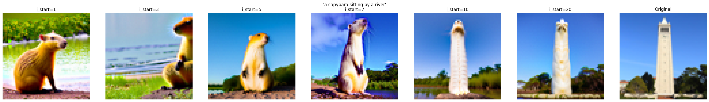
Translation 1
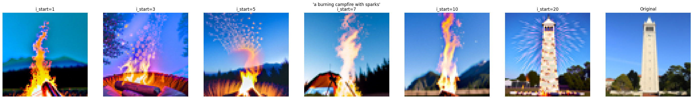
Translation 2
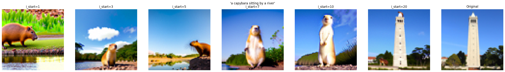
Translation 3
Custom Images Text-Conditional Translation
Custom Image 1
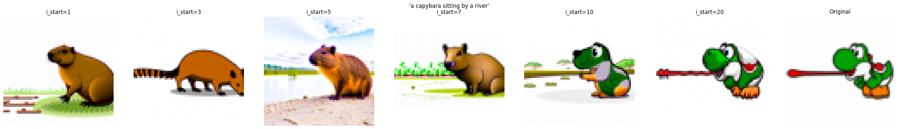
Custom image 1 translation
Custom Image 2
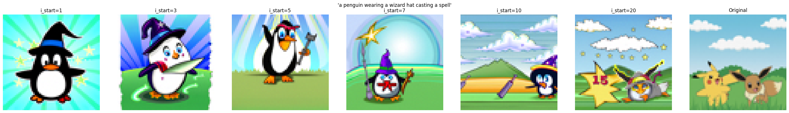
Custom image 2 translation
1.8 Visual Anagrams
Visual anagrams are optical illusions where an image looks like one thing, but when flipped upside down, reveals something else. This is achieved by averaging noise estimates from two different prompts - one for the upright image and one for the flipped version:
Illusion 1: Cathedral / Sailing Ship
Prompts: "an ink illustration of a cathedral" and "an ink illustration of a sailing ship"

Cathedral (upright) / Sailing Ship (flipped)
Illusion 2: Hedgehog / Pine Tree
Prompts: "a pencil sketch of a hedgehog" and "a pencil sketch of a pine tree"

Hedgehog (upright) / Pine Tree (flipped)
Illusion 3: Penguin Wizard / Pirate Ship (Multiple Versions)
Prompts: "a penguin wearing a wizard hat casting a spell" and "a pirate ship flying through space with glowing sails"

Version 1

Version 2

Version 3
1.9 Hybrid Images
Similar to Project 2, I created hybrid images that look like one thing up close and another from far away. This is done by combining low frequencies from one noise estimate with high frequencies from another:
Use the slider below each image to resize it - when small, you should see the low-frequency image, and when large, you should see the high-frequency image.
Hybrid 1: Calm Lake at Sunset / Fox with Detailed Fur
Low frequency: "an oil painting of a calm lake at sunset" | High frequency: "a realistic close-up of a fox with detailed fur"

Version 1

Version 2

Version 3
Hybrid 2: Bridge Over Ocean / Owl Feathers
Low frequency: "a watercolor painting of a long bridge over the ocean" | High frequency: "a realistic close-up of an owl's feathers"

Hybrid 3: Beach with Waves / Colorful Coral
Low frequency: "a watercolor painting of a beach with gentle waves" | High frequency: "a realistic photo of colorful coral with lots of texture"

Part A Conclusion
This project demonstrated the remarkable versatility of diffusion models for various image generation and editing tasks. From basic image generation to sophisticated optical illusions, diffusion models provide a powerful framework for creative image manipulation. Key takeaways include:
Key Takeaways
- Iterative denoising is crucial for high-quality image generation - single-step denoising produces much worse results
- Classifier-Free Guidance (CFG) dramatically improves image quality and coherence
- The same denoising framework can be adapted for many tasks: generation, editing, inpainting, and creating illusions
- Visual anagrams and hybrid images demonstrate how noise estimates can be creatively combined
- The amount of noise added controls the balance between preserving original content and allowing creative edits
Part B: Flow Matching from Scratch
Overview
In Part B, I trained my own flow matching model on the MNIST dataset from scratch. Flow matching is a generative modeling technique that learns to transform samples from a simple distribution (like Gaussian noise) into samples from a complex data distribution by learning the "flow" or velocity field between them.
The key idea is to define a linear interpolation path between noise $x_0 \sim \mathcal{N}(0, I)$ and clean data $x_1$:
The flow (velocity) along this path is the derivative with respect to time:
Our UNet $u_\theta(x_t, t)$ learns to predict this flow.
Part 1: Training a Single-Step Denoising UNet
1.2 Noising Process Visualization
Before training the denoiser, I visualized the noising process at different noise levels $\sigma$. The noising process adds Gaussian noise to a clean image:
Below shows an MNIST digit with increasing noise levels from $\sigma = 0.0$ (clean) to $\sigma = 1.0$ (very noisy):
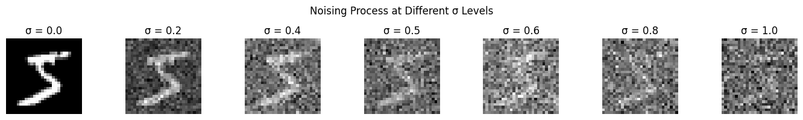
Noising process at $\sigma = [0.0, 0.2, 0.4, 0.5, 0.6, 0.8, 1.0]$
As expected, the image becomes progressively harder to recognize as $\sigma$ increases. At $\sigma = 0.5$ (our training noise level), the digit structure is still somewhat visible but significantly degraded. At $\sigma = 1.0$, the image is almost pure noise.
1.2.1 Training the Denoiser
The goal is to train a denoiser $D_\theta$ that maps noisy image $z$ to clean image $x$. We optimize over an L2 loss:
I trained an unconditional UNet to denoise images with noise level $\sigma = 0.5$. The training setup was:
- Dataset: MNIST training set
- Batch size: 256
- Learning rate: 1e-4
- Hidden dimension: D = 128
- Epochs: 5
- Loss: MSE (L2) loss between predicted and original clean image
Training Loss Curve
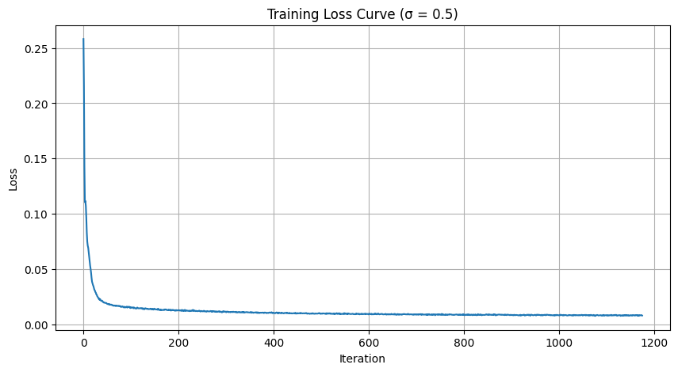
Training loss curve over 5 epochs ($\sigma = 0.5$)
Sample Results After Epoch 1
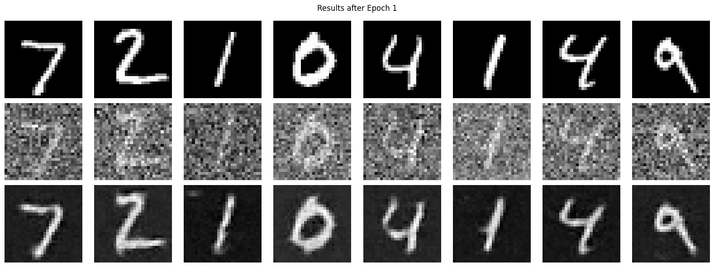
Denoising results after epoch 1 (Top: Original, Middle: Noisy, Bottom: Denoised)
Sample Results After Epoch 5
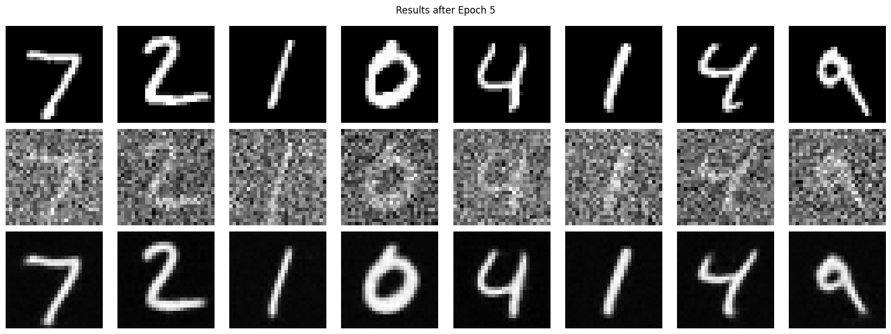
Denoising results after epoch 5 (Top: Original, Middle: Noisy, Bottom: Denoised)
The denoiser shows significant improvement from epoch 1 to epoch 5. After 5 epochs, the model successfully removes most of the noise and recovers clear digit shapes that closely match the originals.
1.2.2 Out-of-Distribution Testing
The denoiser was trained specifically on $\sigma = 0.5$. To test its generalization, I applied it to images with different noise levels $\sigma = [0.0, 0.2, 0.4, 0.5, 0.6, 0.8, 1.0]$:
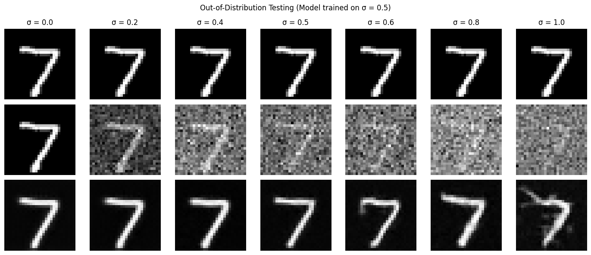
Out-of-distribution testing: Model trained on $\sigma = 0.5$ applied to various noise levels (Top: Original, Middle: Noisy, Bottom: Denoised)
The model performs best at its training noise level ($\sigma = 0.5$). For lower noise levels ($\sigma < 0.5$), the model tends to over-denoise, sometimes altering the digit structure. For higher noise levels ($\sigma > 0.5$), the model struggles to fully recover the original image as there is too much noise to remove in one step. This demonstrates the importance of matching training and inference conditions.
1.2.3 Denoising Pure Noise
To attempt generative modeling with single-step denoising, I trained a new model where the input is pure random Gaussian noise $\epsilon \sim \mathcal{N}(0, I)$ and the target is a clean MNIST digit. The idea is to see if the model can generate digits from pure noise in a single step.
Training Loss Curve
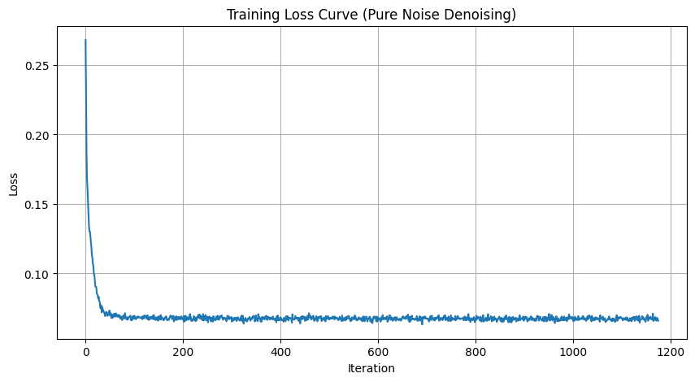
Training loss curve for pure noise denoising
Sample Results After Epoch 1
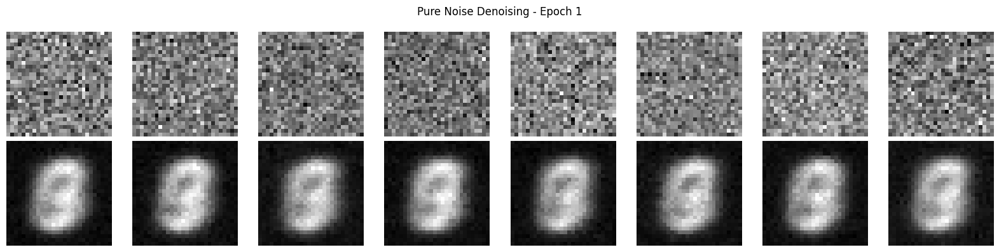
Pure noise denoising results after epoch 1 (Top: Input Noise, Bottom: Output)
Sample Results After Epoch 5
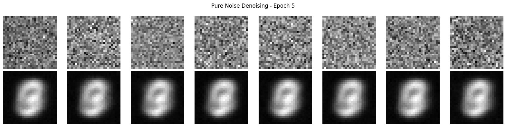
Pure noise denoising results after epoch 5 (Top: Input Noise, Bottom: Output)
Discussion
Observation: The outputs tend to look like a blurry average of all MNIST digits, rather than distinct, recognizable digits.
Explanation: This is because with MSE loss, the model learns to predict the point that minimizes the sum of squared distances to all training examples. Since pure noise has no correlation with any specific digit, the optimal prediction under MSE is the mean/centroid of all training images - essentially an average of all digits 0-9. This results in a blurry, indistinct output that looks like overlapping digits.
This demonstrates why single-step denoising fails for generative tasks and motivates the need for iterative denoising approaches like flow matching.
Part 2: Training a Flow Matching Model
Overview
Since single-step denoising doesn't work for generation, we turn to iterative denoising via flow matching. The key insight is to learn the flow (velocity) from noise to data and integrate it over time to generate samples.
The learning objective is:
where $u_\theta(x_t, t)$ is our time-conditioned UNet that predicts the flow at position $x_t$ and time $t$.
2.2 Training the Time-Conditioned UNet
I added time conditioning to the UNet using FCBlocks that embed the scalar timestep $t$ and modulate the network's intermediate representations. The training setup was:
- Dataset: MNIST training set
- Batch size: 64
- Initial learning rate: 1e-2
- Hidden dimension: D = 64
- Epochs: 10
- Scheduler: Exponential LR decay with $\gamma = 0.1^{(1/\text{num\_epochs})}$
- Number of timesteps: 50
Training Loss Curve
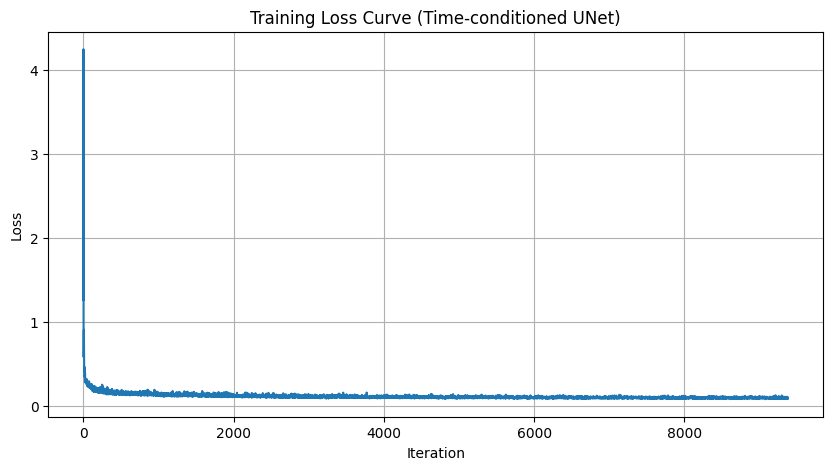
Training loss curve for time-conditioned UNet over 10 epochs
2.3 Sampling from the Time-Conditioned UNet
Using the trained time-conditioned UNet, I sampled images by starting from pure noise $x_0 \sim \mathcal{N}(0, I)$ and iteratively applying the predicted flow over 50 timesteps:
Sampling Results - Epoch 1
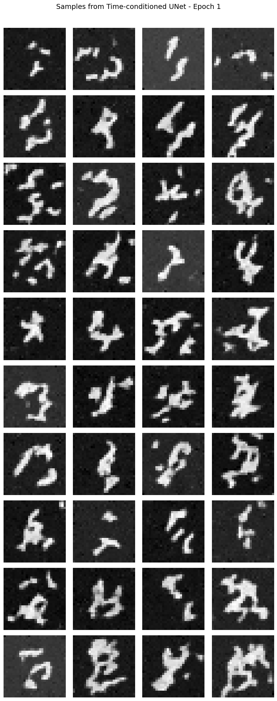
Samples from time-conditioned UNet after epoch 1
Sampling Results - Epoch 5
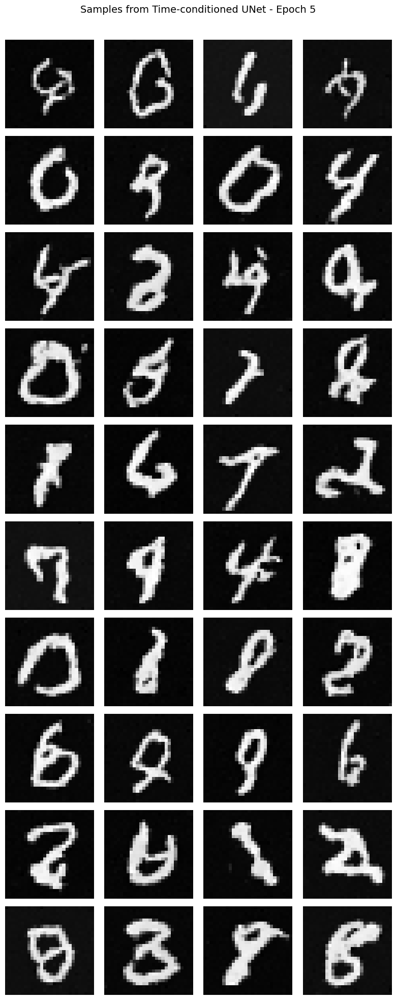
Samples from time-conditioned UNet after epoch 5
Sampling Results - Epoch 10
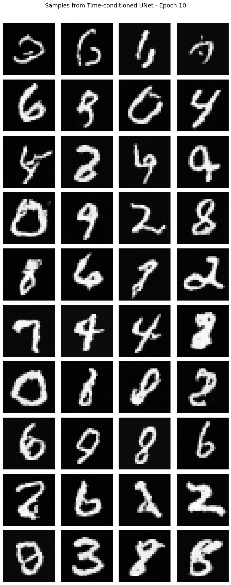
Samples from time-conditioned UNet after epoch 10
The samples improve significantly over training. After epoch 1, the outputs are mostly noise with vague structures. By epoch 5, recognizable digit shapes emerge. After epoch 10, the model produces reasonably clear MNIST-like digits, though without class conditioning we cannot control which digit is generated.
2.5 Training the Class-Conditioned UNet
To gain control over which digit is generated, I added class conditioning to the UNet. The class label is encoded as a one-hot vector and embedded using FCBlocks, similar to time conditioning. A key addition is classifier-free guidance (CFG) dropout: during training, 10% of the time the class conditioning is dropped (set to zero), allowing the model to learn both conditional and unconditional generation.
- Dataset: MNIST training set
- Batch size: 64
- Initial learning rate: 1e-2
- Hidden dimension: D = 64
- Epochs: 10
- Scheduler: Exponential LR decay with $\gamma = 0.1^{(1/\text{num\_epochs})}$
- Number of timesteps: 300
- Unconditional dropout: $p_{\text{uncond}} = 0.1$
Training Loss Curve
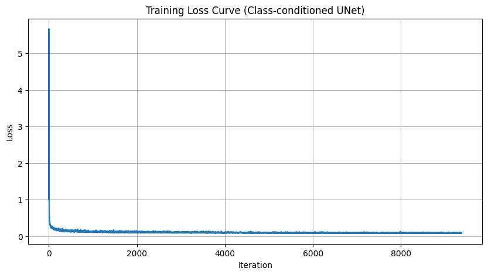
Training loss curve for class-conditioned UNet over 10 epochs
2.6 Sampling from the Class-Conditioned UNet
For sampling, I used classifier-free guidance with $\gamma = 5.0$ to improve sample quality:
This amplifies the influence of the class conditioning, producing more distinctive digits.
Sampling Results - Epoch 1
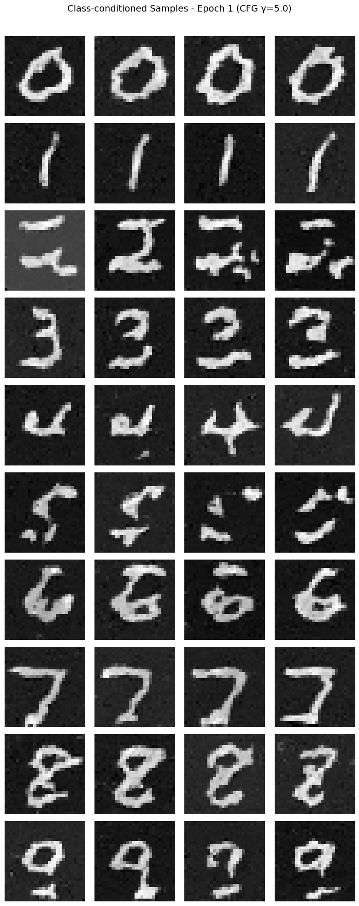
Class-conditioned samples after epoch 1 (4 instances per digit 0-9, CFG $\gamma=5.0$)
Sampling Results - Epoch 5
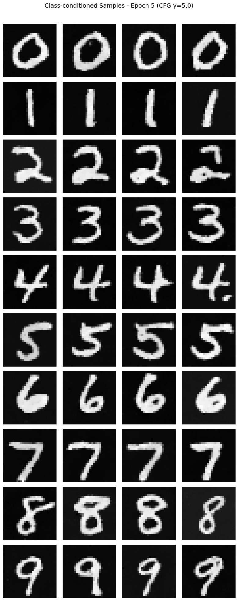
Class-conditioned samples after epoch 5 (4 instances per digit 0-9, CFG $\gamma=5.0$)
Sampling Results - Epoch 10
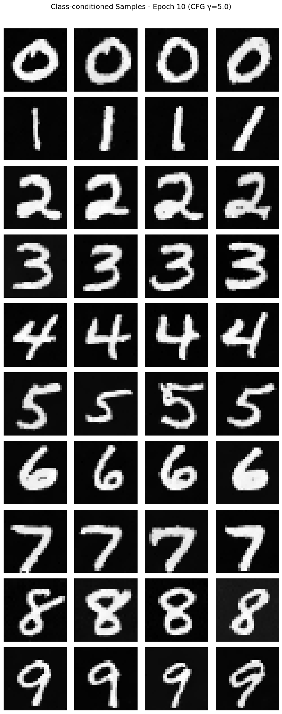
Class-conditioned samples after epoch 10 (4 instances per digit 0-9, CFG $\gamma=5.0$)
The class-conditioned model shows clear improvement over the time-only model. Even after just 1 epoch, some digit shapes are recognizable. By epoch 10, the model generates high-quality, class-consistent digits with good diversity across the 4 instances of each class.
Training Without Learning Rate Scheduler
As an additional experiment, I trained the class-conditioned UNet without the exponential learning rate scheduler. To compensate for the loss of the scheduler, I made the following adjustments:
Compensations for Removing the LR Scheduler
- Reduced initial learning rate from 1e-2 to 1e-3: The exponential scheduler decays the LR by a factor of 10 over training. Starting with a lower LR prevents the model from overshooting early in training.
- Increased epochs from 10 to 15: With a constant lower LR, we need more iterations to achieve similar convergence.
- Added gradient clipping (max_norm=1.0): This stabilizes training by preventing gradient explosions that the decaying LR would have naturally mitigated. :)
Training Loss Curve (No Scheduler)
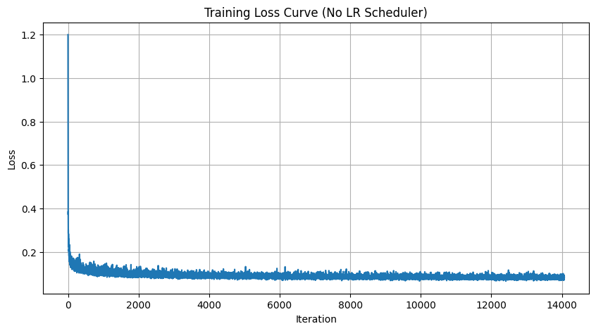
Training loss curve without LR scheduler (15 epochs, LR=1e-3, gradient clipping)
Sampling Results Without Scheduler (Epoch 15)
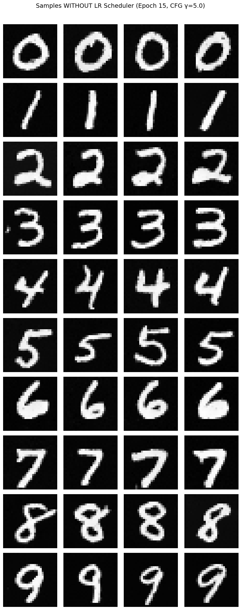
Class-conditioned samples without LR scheduler (epoch 15, CFG $\gamma=5.0$)
The model trained without the scheduler achieves comparable results to the scheduler-based training, demonstrating that careful hyperparameter tuning can compensate for the lack of learning rate scheduling. The key trade-off is requiring more training epochs.
Part B Conclusion
This part of the project demonstrated the implementation of flow matching from scratch for generative modeling on MNIST. The key takeaways are:
Key Takeaways
- Single-step denoising fails for generation: Training a model to denoise pure noise in one step produces blurry averages of all training images due to the MSE loss minimizing distance to the centroid of all possible outputs.
- Iterative denoising via flow matching works: By learning the velocity field from noise to data and integrating over many timesteps, we can generate clear, diverse samples.
- Time conditioning is necessary: The UNet must know "where" in the denoising process it is to make appropriate predictions at each step.
- Class conditioning enables control: Adding class labels as conditioning allows us to generate specific digits on demand.
- Classifier-free guidance improves quality: By training with random dropout of the class condition and using CFG at inference time, we get sharper, more distinctive samples.
- Learning rate scheduling can be replaced: With careful tuning of initial LR, more epochs, and gradient clipping, we can achieve similar results without a scheduler.